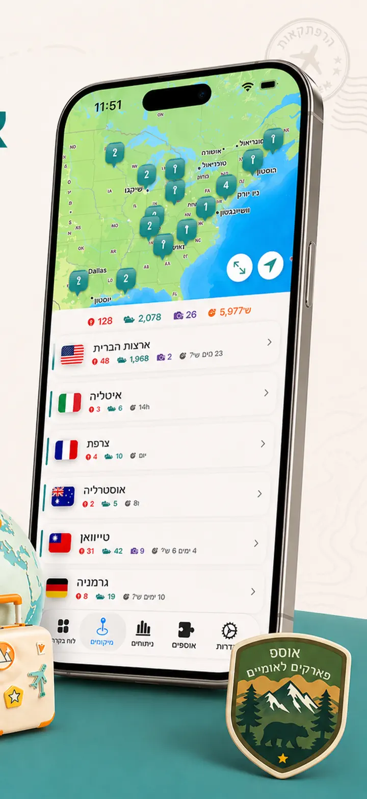
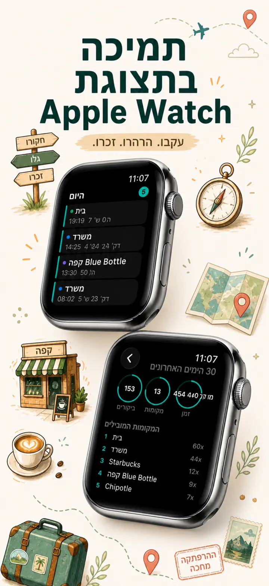
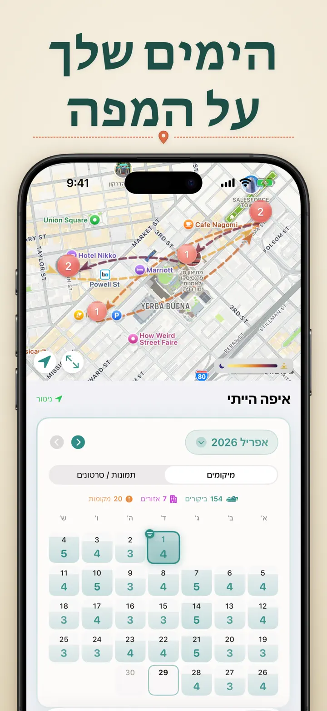
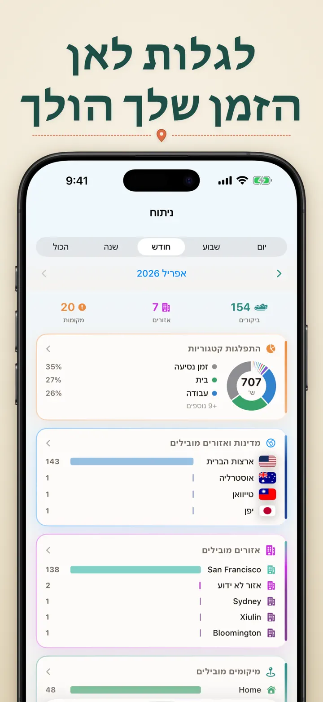
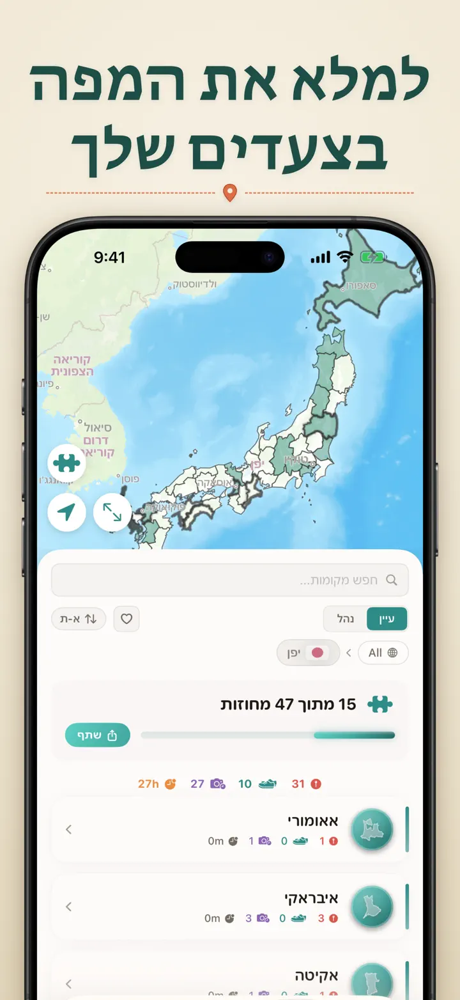
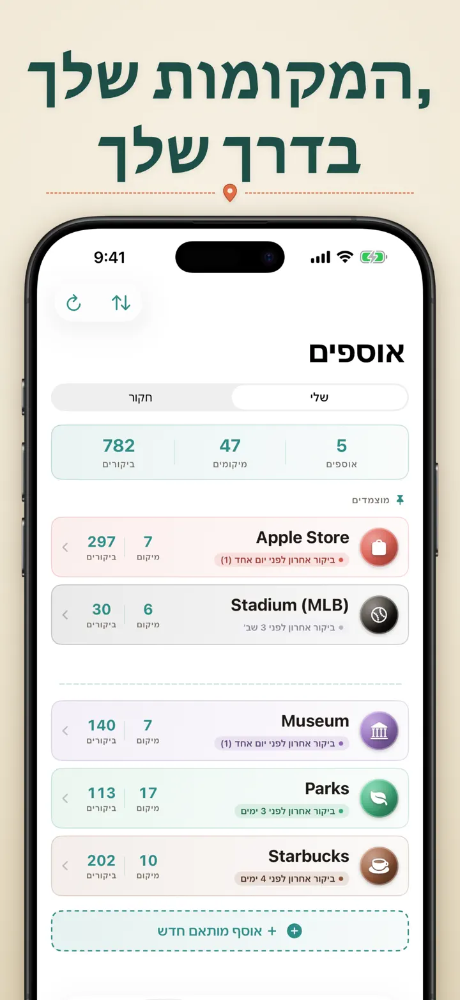
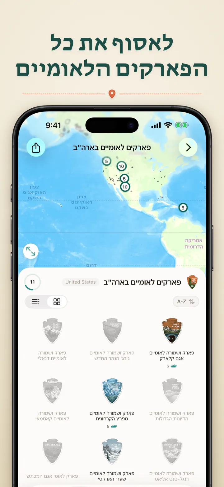
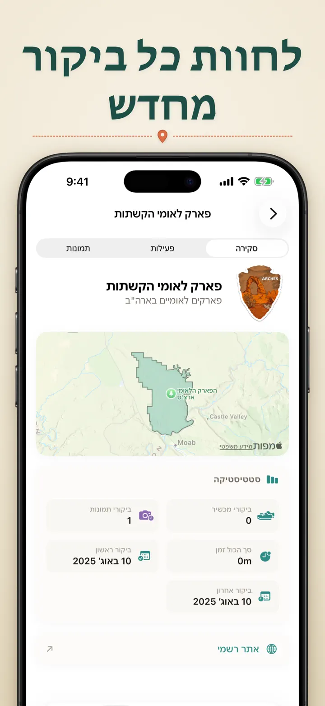

איפה הייתי
מסע ומיקומי תמונות אוטומטי
חדש: 103 מקדשי איצ'ינומייה של יפן, לכל אחד סמל מגולף משלו. מעקב ביקורים אוטומטי וציר זמן פרטי, הכול במכשיר שלכם.
הורדה מה-App Storeעל האפליקציה
?Where was I — זיכרון המיקומים האישי שלכם
ניסיתם פעם להיזכר באותה מסעדה מדהימה מהחודש שעבר? תהיתם כמה זמן אתם מבלים במשרד לעומת הבית? ?Where was I עוקב אוטומטית אחרי הביקורים שלכם ובונה ציר זמן יפהפה של המסע שלכם בחיים.
מעקב אוטומטי
אין צורך לתעד ידנית. האפליקציה רושמת בשקט מתי הגעתם ועזבתם מקומות, ויוצרת היסטוריית ביקורים מפורטת בלי שום מאמץ מצדכם.
תצוגת לוח שנה חכמה
ראו את הביקורים שלכם מאורגנים לפי יום, שבוע או חודש. לוח השנה האינטואיטיבי מציג מספר ביקורים ומקומות ייחודיים במבט חטוף. הקישו על כל יום כדי לראות בדיוק איפה הייתם.
וידג'טים למסך הבית ולמסך הנעילה
ראו את הביקורים האחרונים שלכם במבט חטוף עם הווידג'ט הבינוני למסך הבית. וידג'טים למסך הנעילה מציגים את המיקום הנוכחי שלכם, טיימר שהייה חי או מספר הביקורים של היום — כולם להקשה כדי לקפוץ חזרה לאפליקציה.
מיקומים מאורגנים
המיקומים מקובצים אוטומטית לפי אזור ועיר. שייכו קטגוריות מותאמות כמו בית, עבודה, חדר כושר או בית קפה. צרו קטגוריות משלכם עם אייקונים וצבעים מותאמים לסגנון החיים שלכם.
ניתוחים עוצמתיים
גלו דפוסים בחיים שלכם:
- חלוקת זמן לפי קטגוריות
- המקומות הנפוצים ביותר אצלכם
- ניתוח קצב שבועי
- מגמות תדירות ביקורים
- גרף משך שהייה לכל מיקום — ראו כמה זמן אתם נשארים בדרך כלל, לפי יום, שבוע, חודש או שנה
אוסף מדינות ואזורים
הפכו את הטיולים שלכם לפאזל! ראו בכמה מדינות, מחוזות או אזורים ביקרתם בכל ארץ. שתפו את ההתקדמות כתמונת פאזל מרהיבה כדי לעורר השראה בחברים ובמשפחה.
התקדמות בפארקים לאומיים
צאו לחקור את הטבע! תעדו אוטומטית את הביקורים שלכם בפארקים לאומיים ועקבו אחרי ההתקדמות לצד המיקומים היומיומיים.
100 הטירות המפורסמות של יפן
מטיילים ביפן? אוסף מובנה חדש עוקב אחרי הביקורים שלכם ב-100 הטירות המפורסמות של המדינה. תמצאו אותו בלשונית האוספים → גלו → יפן.
אוספים מותאמים אישית
עקבו אחרי כל מה שתרצו — חנויות Apple, מוזיאונים, מבשלות, חנויות ספרים. צרו אוסף, הגדירו מילות מפתח, וצפו בו מתמלא אוטומטית. הוסיפו או הסירו מיקומים ידנית בכל עת. כל אוסף מציג מספר ביקורים, היסטוריה מלאה ומפה.
ייבוא היסטוריית המיקומים שלכם
מגיעים מאפליקציה אחרת? הביאו אִתכם את כל ההיסטוריה שלכם — הפורמט מזוהה אוטומטית, ייצוא גדול מטופל, ותראו תצוגה מקדימה לפני שמשהו מיובא:
- Google Timeline (ייצוא Google Maps או Google Takeout)
- Arc Timeline (קובצי ה-.json החודשיים שאתם מייצאים מ-Arc)
- Moves (גיבוי ProtoGeo / Facebook Moves)
ניהול בכמות
נהלו את כל המיקומים שלכם במקום אחד. חפשו, מיינו וסננו. בחרו מספר מיקומים כדי לקטלג או למחוק בכמות. שמרו על ספריית מיקומים נקייה ומסודרת.
פרטיות קודם כל
נתוני המיקום שלכם נשארים במכשיר. אין צורך בחשבון. לא נשלחים נתונים לשרתים. התנועות שלכם הן עניינכם בלבד.
מושלם עבור:
- מעקב אחרי שעות עבודה ומיקומים
- זכירת מסעדות וחנויות שביקרתם בהן
- ניתוח השגרה היומית שלכם
- ניהול יומן מסע ותיעוד ביקורים בפארקים לאומיים
- דיווח הוצאות ומעקב נסועה
- הבנת חלוקת הזמן שלכם
תכונות:
- זיהוי אוטומטי של הגעה ועזיבה
- תצוגת לוח שנה עם ציר זמן יומי
- וידג'טים למסך הבית ולמסך הנעילה עם קישור ישיר
- קיבוץ מיקומים לפי אזור ועיר
- קטגוריות מותאמות עם אייקונים וצבעים
- הצעות קטגוריה חכמות מ-Apple Maps
- היסטוריית ביקורים מפורטת עם משך זמן
- גרף משך שהייה לכל מיקום (יום / שבוע / חודש / שנה)
- לוח ניתוחים עם תובנות
- חיפוש וסינון מיקומים
- אוסף מדינות ואזורים עם תמונת פאזל לשיתוף
- מעקב התקדמות בפארקים לאומיים
- אוסף 100 הטירות המפורסמות של יפן מובנה
- אוספים מותאמים עם התאמת מילות מפתח, עריכה ידנית וסטטיסטיקה
- ניהול מיקומים בכמות
- ייבוא מ-Google Timeline, Arc Timeline ו-Moves
- יכולות ייצוא
- ללא צורך בחשבון
- עיצוב ממוקד פרטיות
התחילו לבנות את זיכרון המיקומים שלכם היום. הורידו את ?Where was I ולעולם אל תשכחו איפה הייתם.
Privacy Policy: https://masawata.net/privacy-policy.html Terms Of Service: https://www.apple.com/legal/internet-services/itunes/dev/stdeula/
צילומי מסך








איפה הייתי
חדש: 103 מקדשי איצ'ינומייה של יפן, לכל אחד סמל מגולף משלו. מעקב ביקורים אוטומטי וציר זמן פרטי, הכול במכשיר שלכם.
הורדה מה-App Store